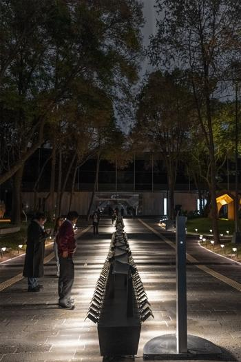
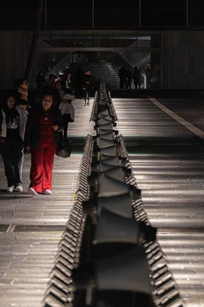
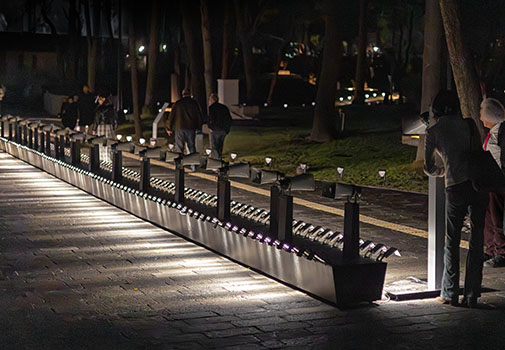
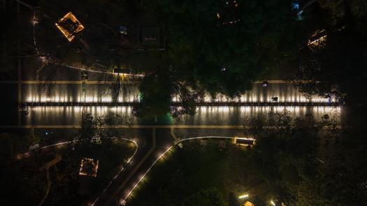
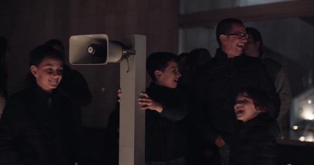

Voice Path, 2026
| 👤for | Rafael Lozano-Hemmer |
|---|---|
| #Year | 2026 |
| 🔗Official Site | lozano-hemmer.com/voice_path.php |
| 📋I did | Software |
“Voice Path” is a voice-activated audiovisual installation that unfolds along the pedestrian path connecting the museum’s main building with Gamboa Hall. Hundreds of spotlights located along the length of the footpath create parallel lines that respond to visitors’ voices. Two intercoms at either end serve as the input points: silence is interpreted as zero intensity, while sound modulates the brightness of each light, producing a series of pulses that echo participants’ messages in a Morse-like code. Once a message is recorded, the system loops it back through the nearby lights and loudspeakers, making the path both a display and a soundscape of recent contributions.
As new people participate, earlier recordings are pushed down the array of lights, so that the installation’s “memory” is continually recycled—older messages fade as newer ones arrive, forming an ever-evolving archive of voice and light that emphasizes the ephemeral nature of dialogue and presence. When no one is participating live, a selection of archival sound recordings from the Fonoteca Nacional, curated by Tito Rivas, activates the piece, creating a historical echo that coexists with recently recorded messages—a dynamic record of collective expression.





Acknowledgment
This artwork by Rafael Lozano-Hemmer is the result of the combined efforts of a talented and diverse group of professionals. Each person has contributed unique skills and expertise to the creation of this piece. For more information about the team and their roles, please visit our official website.